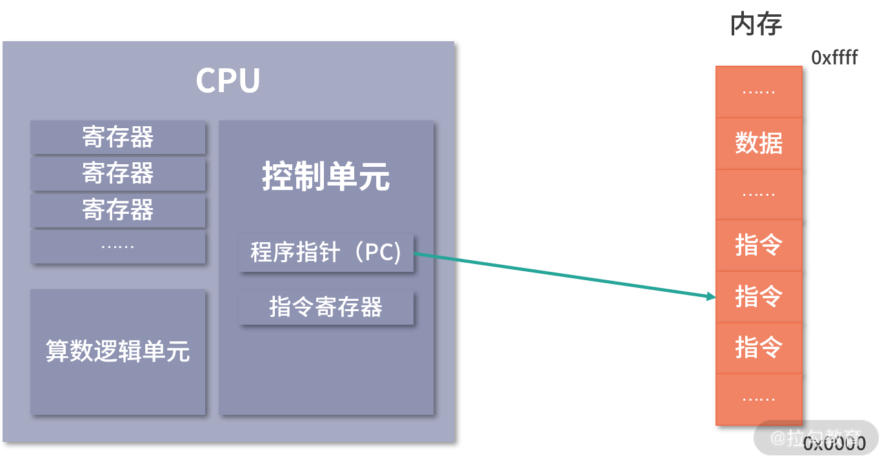
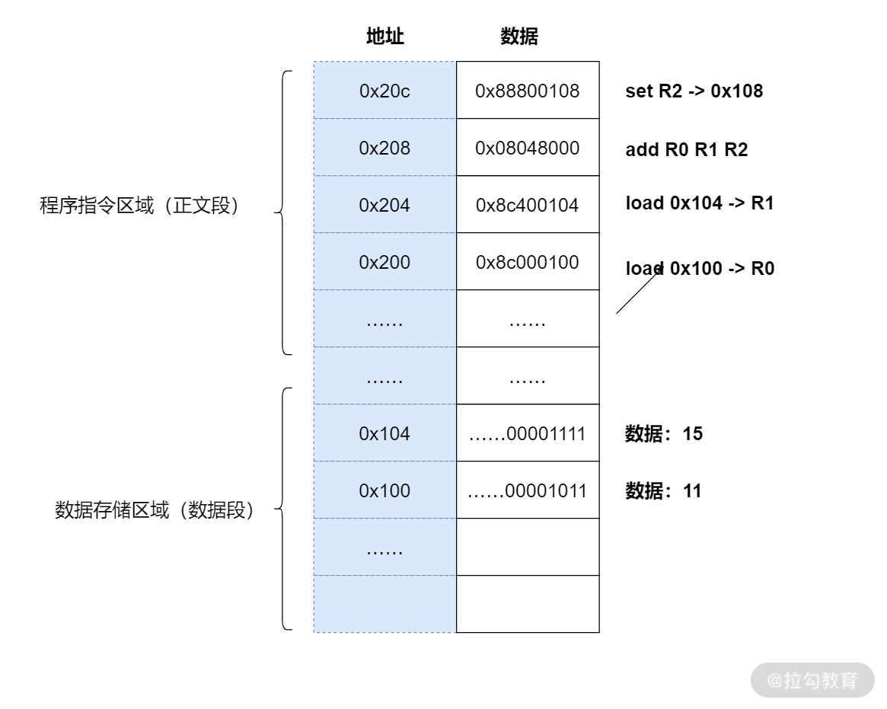
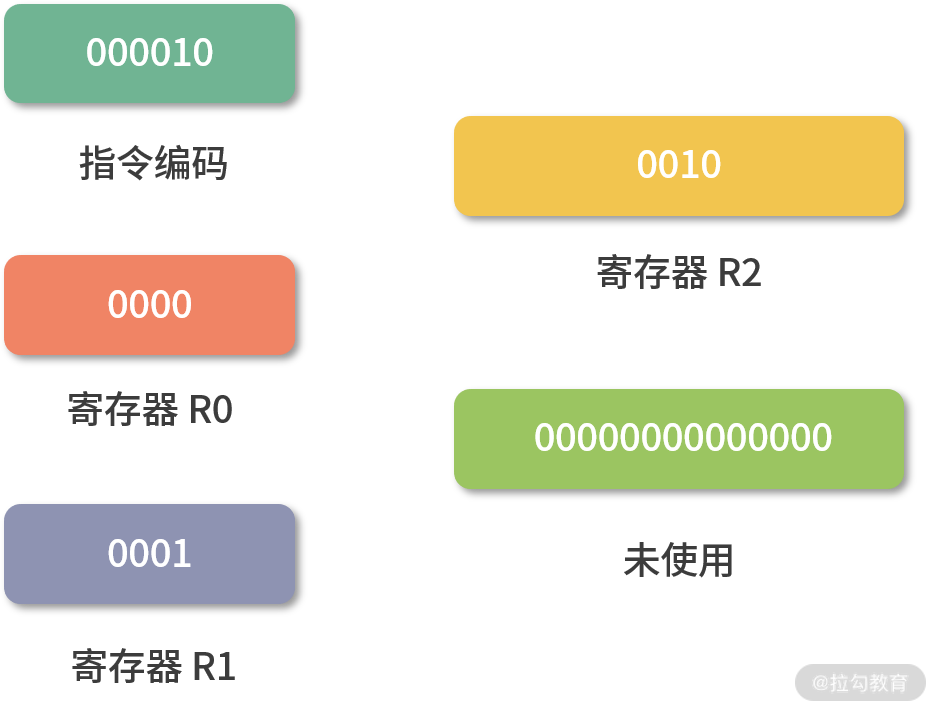

- 00 开篇词 为什么大厂面试必考操作系统？.md.html
- 00 课前必读 构建知识体系，可以这样做！.md.html
- 01 计算机是什么：“如何把程序写好”这个问题是可计算的吗？.md.html
- 02 程序的执行：相比 32 位，64 位的优势是什么？（上）.md.html
- 03 程序的执行：相比 32 位，64 位的优势是什么？（下）.md.html
- 04 构造复杂的程序：将一个递归函数转成非递归函数的通用方法.md.html
- 05 存储器分级：L1 Cache 比内存和 SSD 快多少倍？.md.html
- 05 (1) 加餐 练习题详解（一）.md.html
- 06 目录结构和文件管理指令：rm -rf 指令的作用是？.md.html
- 07 进程、重定向和管道指令：xargs 指令的作用是？.md.html
- 08 用户和权限管理指令： 请简述 Linux 权限划分的原则？.md.html
- 09 Linux 中的网络指令：如何查看一个域名有哪些 NS 记录？.md.html
- 10 软件的安装： 编译安装和包管理器安装有什么优势和劣势？.md.html
- 11 高级技巧之日志分析：利用 Linux 指令分析 Web 日志.md.html
- 12 高级技巧之集群部署：利用 Linux 指令同时在多台机器部署程序.md.html
- 12 (1)加餐 练习题详解（二）.md.html
- 13 操作系统内核：Linux 内核和 Windows 内核有什么区别？.md.html
- 14 用户态和内核态：用户态线程和内核态线程有什么区别？.md.html
- 15 中断和中断向量：Javajs 等语言为什么可以捕获到键盘输入？.md.html
- 16 WinMacUnixLinux 的区别和联系：为什么 Debian 漏洞排名第一还这么多人用？.md.html
- 16 (1)加餐 练习题详解（三）.md.html
- 17 进程和线程：进程的开销比线程大在了哪里？.md.html
- 18 锁、信号量和分布式锁：如何控制同一时间只有 2 个线程运行？.md.html
- 19 乐观锁、区块链：除了上锁还有哪些并发控制方法？.md.html
- 20 线程的调度：线程调度都有哪些方法？.md.html
- 21 哲学家就餐问题：什么情况下会触发饥饿和死锁？.md.html
- 22 进程间通信： 进程间通信都有哪些方法？.md.html
- 23 分析服务的特性：我的服务应该开多少个进程、多少个线程？.md.html
- 23 (1)加餐 练习题详解（四）.md.html
- 24 虚拟内存 ：一个程序最多能使用多少内存？.md.html
- 25 内存管理单元： 什么情况下使用大内存分页？.md.html
- 26 缓存置换算法： LRU 用什么数据结构实现更合理？.md.html
- 27 内存回收上篇：如何解决内存的循环引用问题？.md.html
- 28 内存回收下篇：三色标记-清除算法是怎么回事？.md.html
- 28 (1)加餐 练习题详解（五）.md.html
- 29 Linux 下的各个目录有什么作用？.md.html
- 30 文件系统的底层实现：FAT、NTFS 和 Ext3 有什么区别？.md.html
- 31 数据库文件系统实例：MySQL 中 B 树和 B+ 树有什么区别？.md.html
- 32 HDFS 介绍：分布式文件系统是怎么回事？.md.html
- 32 (1)加餐 练习题详解（六）.md.html
- 33 互联网协议群（TCPIP）：多路复用是怎么回事？.md.html
- 34 UDP 协议：UDP 和 TCP 相比快在哪里？.md.html
- 35 Linux 的 IO 模式：selectpollepoll 有什么区别？.md.html
- 36 公私钥体系和网络安全：什么是中间人攻击？.md.html
- 36 (1)加餐 练习题详解（七）.md.html
- 37 虚拟化技术介绍：VMware 和 Docker 的区别？.md.html
- 38 容器编排技术：如何利用 K8s 和 Docker Swarm 管理微服务？.md.html
- 39 Linux 架构优秀在哪里.md.html
- 40 商业操作系统：电商操作系统是不是一个噱头？.md.html
- 40 (1)加餐 练习题详解（八）.md.html
- 41 结束语 论程序员的发展——信仰、选择和博弈.md.html
- 捐赠
03 程序的执行：相比 32 位，64 位的优势是什么？（下）
在 02 课时中我们学习了计算机的组成原理，还分析了一些你在工作中可能会遇到的问题。本课时，我们继续深入学习程序执行部分，进一步讨论程序在冯诺依曼模型上如何执行。
程序的执行过程
当 CPU 执行程序的时候：
1.首先，CPU 读取 PC 指针指向的指令，将它导入指令寄存器。具体来说，完成读取指令这件事情有 3 个步骤：
步骤 1：CPU 的控制单元操作地址总线指定需要访问的内存地址（简单理解，就是把 PC 指针中的值拷贝到地址总线中）。
步骤 2：CPU 通知内存设备准备数据（内存设备准备好了，就通过数据总线将数据传送给 CPU）。
步骤 3：CPU 收到内存传来的数据后，将这个数据存入指令寄存器。
完成以上 3 步，CPU 成功读取了 PC 指针指向指令，存入了指令寄存器。
2.然后，CPU 分析指令寄存器中的指令，确定指令的类型和参数。 3.如果是计算类型的指令，那么就交给逻辑运算单元计算；如果是存储类型的指令，那么由控制单元执行。 4.PC 指针自增，并准备获取下一条指令。
比如在 32 位的机器上，指令是 32 位 4 个字节，需要 4 个内存地址存储，因此 PC 指针会自增 4。

了解了程序的执行过程后，我还有一些问题想和大家一起讨论：
- 内存虽然是一个随机存取器，但是我们通常不会把指令和数据存在一起，这是为了安全起见。具体的原因我会在模块四进程部分展开讲解，欢迎大家在本课时的留言区讨论起来，我会结合你们留言的内容做后续的课程设计。
- 程序指针也是一个寄存器，64 位的 CPU 会提供 64 位的寄存器，这样就可以使用更多内存地址。特别要说明的是，64 位的寄存器可以寻址的范围非常大，但是也会受到地址总线条数的限制。比如和 64 位 CPU 配套工作的地址总线只有 40 条，那么可以寻址的范围就只有 1T，也就是 240。
- 从 PC 指针读取指令、到执行、再到下一条指令，构成了一个循环，这个不断循环的过程叫作CPU 的指令周期，下面我们会详细讲解这个概念。
详解 a = 11 + 15 的执行过程
上面我们了解了基本的程序执行过程，接下来我们来看看如果用冯诺依曼模型执行a=11+15是一个怎样的过程。
我们再 Review 下这个问题：程序员写的程序a=11+15是字符串，CPU 不能执行字符串，只能执行指令。所以这里需要用到一种特殊的程序——编译器。编译器的核心能力是翻译，它把一种程序翻译成另一种程序语言。
这里，我们需要编译器将程序员写的程序翻译成 CPU 认识的指令（指令我们认为是一种低级语言，我们平时书写的是高级语言）。你可以先跟我完整地学完操作系统，再去深入了解编译原理的内容。
下面我们来详细阐述 a=11+15 的执行过程：
1.编译器通过分析，发现 11 和 15 是数据，因此编译好的程序启动时，会在内存中开辟出一个专门的区域存这样的常数，这个专门用来存储常数的区域，就是数据段，如下图所示：
- 11 被存储到了地址 0x100；
- 15 被存储到了地址 0x104；

2.编译器将a=11+15转换成了 4 条指令，程序启动后，这些指令被导入了一个专门用来存储指令的区域，也就是正文段。如上图所示，这 4 条指令被存储到了 0x200-0x20c 的区域中：
0x200 位置的 load 指令将地址 0x100 中的数据 11 导入寄存器 R0；
0x204 位置的 load 指令将地址 0x104 中的数据 15 导入寄存器 R1；
0x208 位置的 add 指令将寄存器 R0 和 R1 中的值相加，存入寄存器 R2；
0x20c 位置的 store 指令将寄存器 R2 中的值存回数据区域中的 0x1108 位置。
3.具体执行的时候，PC 指针先指向 0x200 位置，然后依次执行这 4 条指令。
这里还有几个问题要说明一下：
- 变量 a 实际上是内存中的一个地址，a 是给程序员的助记符。
- 为什么 0x200 中代表加载数据到寄存器的指令是 0x8c000100，我们会在下面详细讨论。
- 不知道细心的同学是否发现，在上面的例子中，我们每次操作 4 个地址，也就是 32 位，这是因为我们在用 32 位宽的 CPU 举例。在 32 位宽的 CPU 中，指令也是 32 位的。但是数据可以小于 32 位，比如可以加和两个 8 位的字节。
- 关于数据段和正文段的内容，会在模块四进程和线程部分继续讲解。
指令
接下来我会带你具体分析指令的执行过程。
在上面的例子中，load 指令将内存中的数据导入寄存器，我们写成了 16 进制：0x8c000100，拆分成二进制就是：
这里大家还是看下图，需要看一下才能明白。

- 最左边的 6 位，叫作操作码，英文是 OpCode，100011 代表 load 指令；
- 中间的 4 位 0000是寄存器的编号，这里代表寄存器 R0；
- 后面的 22 位代表要读取的地址，也就是 0x100。
所以我们是把操作码、寄存器的编号、要读取的地址合并到了一个 32 位的指令中。
我们再来看一条求加法运算的 add 指令，16 进制表示是 0x08048000，换算成二进制就是：

- 最左边的 6 位是指令编码，代表指令 add；
- 紧接着的 4 位 0000 代表寄存器 R0；
- 然后再接着的 4 位 0001 代表寄存器 R1；
- 再接着的 4 位 0010 代表寄存器 R2；
- 最后剩下的 14 位没有被使用。
构造指令的过程，叫作指令的编码，通常由编译器完成；解析指令的过程，叫作指令的解码，由 CPU 完成。由此可见 CPU 内部有一个循环：
- 首先 CPU 通过 PC 指针读取对应内存地址的指令，我们将这个步骤叫作 Fetch，就是获取的意思。
- CPU 对指令进行解码，我们将这个部分叫作 Decode。
- CPU 执行指令，我们将这个部分叫作 Execution。
- CPU 将结果存回寄存器或者将寄存器存入内存，我们将这个步骤叫作 Store。

上面 4 个步骤，我们叫作 CPU 的指令周期。CPU 的工作就是一个周期接着一个周期，周而复始。
指令的类型
通过上面的例子，你会发现不同类型（不同 OpCode）的指令、参数个数、每个参数的位宽，都不一样。而参数可以是以下这三种类型：
- 寄存器；
- 内存地址；
- 数值（一般是整数和浮点）。
当然，无论是寄存器、内存地址还是数值，它们都是数字。
指令从功能角度来划分，大概有以下 5 类：
- I/O 类型的指令，比如处理和内存间数据交换的指令 store/load 等；再比如将一个内存地址的数据转移到另一个内存地址的 mov 指令。
- 计算类型的指令，最多只能处理两个寄存器，比如加减乘除、位运算、比较大小等。
- 跳转类型的指令，用处就是修改 PC 指针。比如编程中大家经常会遇到需要条件判断+跳转的逻辑，比如 if-else，swtich-case、函数调用等。
- 信号类型的指令，比如发送中断的指令 trap。
- 闲置 CPU 的指令 nop，一般 CPU 都有这样一条指令，执行后 CPU 会空转一个周期。
指令还有一个分法，就是寻址模式，比如同样是求和指令，可能会有 2 个版本：
- 将两个寄存器的值相加的 add 指令。
- 将一个寄存器和一个整数相加的 addi 指令。
另外，同样是加载内存中的数据到寄存器的 load 指令也有不同的寻址模式：
- 比如直接加载一个内存地址中的数据到寄存器的指令
la，叫作直接寻址。 - 直接将一个数值导入寄存器的指令
li，叫作寄存器寻址。 - 将一个寄存器中的数值作为地址，然后再去加载这个地址中数据的指令
lw，叫作间接寻址。
因此寻址模式是从指令如何获取数据的角度，对指令的一种分类，目的是给编写指令的人更多选择。
了解了指令的类型后，我再强调几个细节问题：
- 关于寻址模式和所有的指令，只要你不是嵌入式开发人员，就不需要记忆，理解即可。
- 不同 CPU 的指令和寄存器名称都不一样，因此这些名称也不需要你记忆。
- 有几个寄存器在所有 CPU 里名字都一样，比如 PC 指针、指令寄存器等。
指令的执行速度
之前我们提到过 CPU 是用石英晶体产生的脉冲转化为时钟信号驱动的，每一次时钟信号高低电平的转换就是一个周期，我们称为时钟周期。CPU 的主频，说的就是时钟信号的频率。比如一个 1GHz 的 CPU，说的是时钟信号的频率是 1G。
到这里你可能会有疑问：是不是每个时钟周期都可以执行一条指令？其实，不是的，多数指令不能在一个时钟周期完成，通常需要 2 个、4 个、6 个时钟周期。
总结
接下来我们来做一个总结。这节课我们深入讨论了指令和指令的分类。接下来，我们来看一看在 02 课时中留下的问题：64 位和 32 位比较有哪些优势？
还是老规矩，请你先自己思考这个问题的答案，写在留言区，然后再来看我接下来的分析。
【解析】 其实，这个问题需要分类讨论。
- 如果说的是 64 位宽 CPU，那么有 2 个优势。
优势 1：64 位 CPU 可以执行更大数字的运算，这个优势在普通应用上不明显，但是对于数值计算较多的应用就非常明显。
优势 2：64 位 CPU 可以寻址更大的内存空间
- 如果 32 位/64 位说的是程序，那么说的是指令是 64 位还是 32 位的。32 位指令在 64 位机器上执行，困难不大，可以兼容。 如果是 64 位指令，在 32 位机器上执行就困难了。因为 32 位指令在 64 位机器执行的时候，需要的是一套兼容机制；但是 64 位指令在 32 位机器上执行，32 位的寄存器都存不下指令的参数。
- 操作系统也是一种程序，如果是 64 位操作系统，也就是操作系统中程序的指令都是 64 位指令，因此不能安装在 32 位机器上。
© 2019 - 2023 Liangliang Lee. Powered by gin and hexo-theme-book.